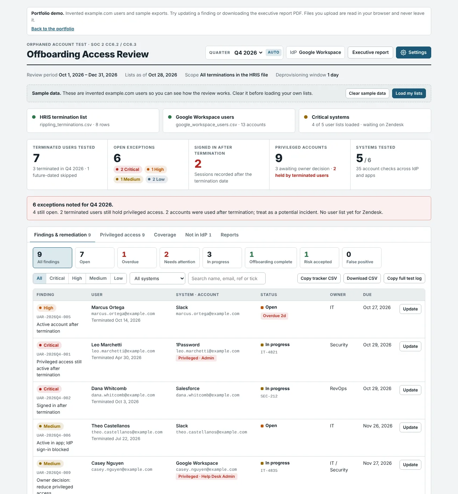
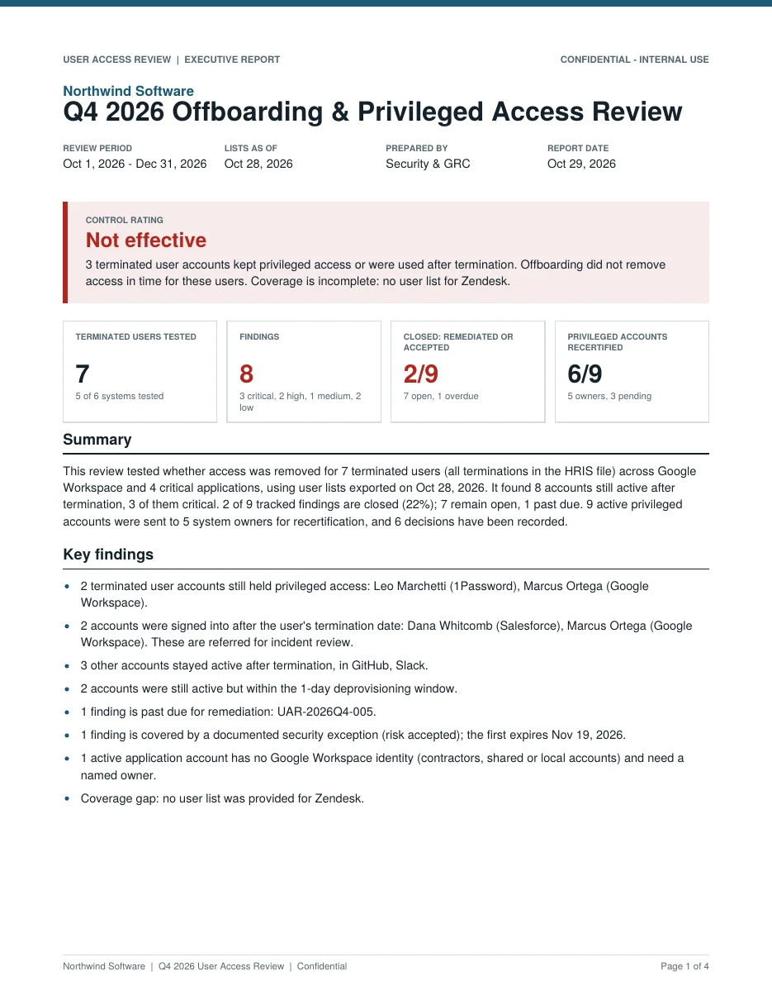

Offboarding & Privileged Access Review
A quarterly user access review that tests whether offboarding actually removed access. It compares the HR termination list with the identity provider (Google Workspace or Microsoft Entra ID) and the user list from each critical system, rates every account still active after termination, and pulls every privileged account into a report for its system owner to recertify. Every finding is then tracked to closure, either offboarding completed with evidence or risk accepted under a documented security exception, in a register that builds up quarter after quarter and never deletes a finding. System owners confirm privileged access from a link in a Slack, Teams, or Google Chat message, and the quarter ends with an executive report as a PDF. The output is the auditor's evidence: a remediation tracker, a full test log, a coverage table of each system's controls, and a written workpaper.
- Domain
- Identity and access management, SOC 2 CC6.2 / CC6.3 evidence
- Data protection
- Every file is read in the browser; nothing is uploaded or sent anywhere
- Delivered as
- Single-file web app with a PDF executive report and CSV and text exports for the audit file


What it does
- Picks the review quarter from today's date, with fiscal-year support and a choice of which terminations are in scope
- Takes the HR termination list, the identity provider export, an optional admin-role export, and a user list from each critical system, one at a time or all at once
- Routes bulk uploads by their columns and file names, maps columns automatically from known exports, and fills in answers it can read from the data, such as MFA enrollment
- Asks the control questions for each system (SSO, MFA, automated provisioning, how accounts are removed) and uses the answers to rate findings and write design notes
- Rates each active account: Critical for privileged access or a sign-in after termination, High for an active account, Medium when the identity provider already blocks sign-in, Low inside the deprovisioning window
- Lists every active privileged account by system owner with flags for terminated, not in the identity provider, idle, and no MFA, and drafts the request each owner receives with a due date
- Lists active app accounts with no identity provider account at all, such as contractors and local admins that never came through HR
- Tracks each finding with an owner, a due date set by severity, and a ticket, through to offboarding completed with evidence or risk accepted under a numbered security exception with justification, compensating controls, approver, and expiry
- Re-tests open findings against each newer user list: access that is gone closes the finding as verified, and access that is still there reopens a finding marked complete
- Keeps one permanent findings register across every quarterly review: findings are only ever closed, and open findings carry into the next quarter marked as carried over
- Sends each system owner a privileged access confirmation by Slack, Microsoft Teams, or Google Chat, records the date, time, and recipient, and links the owner to a page where they approve current access or request a change, which updates the review automatically
- Builds a letter-size executive report as a PDF with a control rating, key findings, remediation status, security exceptions, privileged access by owner, every owner confirmation request with its date, time, recipient, and response, coverage, recommendations, and sign-off lines
Safeguards
- Runs entirely in the browser; HR and user lists never leave the computer
- Uploaded lists can be kept off the device on shared machines, while settings and decisions are kept
- Name-only matches are labeled for manual confirmation rather than treated as certain
- Service accounts are excluded only by patterns the reviewer sets, so nothing is hidden silently
- Missing user lists and unanswered control questions are called out in the conclusion, so incomplete coverage cannot pass as a clean review
- A finding counts as closed only when its evidence or exception record is complete, and an expired exception reopens its finding
- The executive report can print initials instead of names for wider distribution
- In the live tool, access rules let system owners read only their own request and write only their own response, recorded with their identity and time; they never see findings, user lists, or other owners' answers
- The configuration backup holds settings and decisions only, never user data
How it was verified
- Built against the column layouts of real exports: Google Workspace user downloads, Entra ID user downloads, and common SaaS admin exports with their own status and role conventions
- Run end to end in a headless browser on a sample set designed to hit every rating, including a sign-in after termination, a still-active admin, a disabled admin, an identity-provider block, a future-dated termination, and a service account
- Each result was checked against the expected rating before the demo was published
- Remediation was tested by uploading a newer user list with accounts deactivated, which closed those findings as verified by re-test, and the PDF was rendered page by page to check layout and page breaks
- Owner confirmations were tested end to end against a stand-in for the shared database: an owner without edit rights answered a request, the review applied the answer and marked the request responded, and a simulated next quarter carried open findings forward with nothing deleted